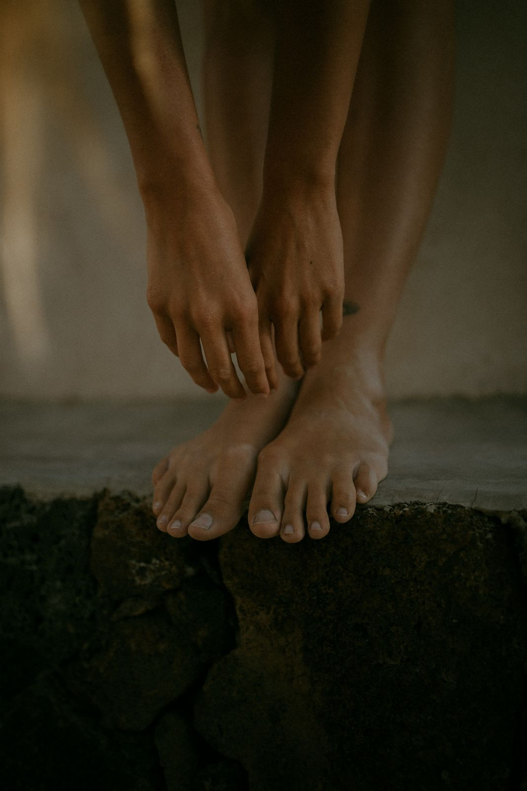
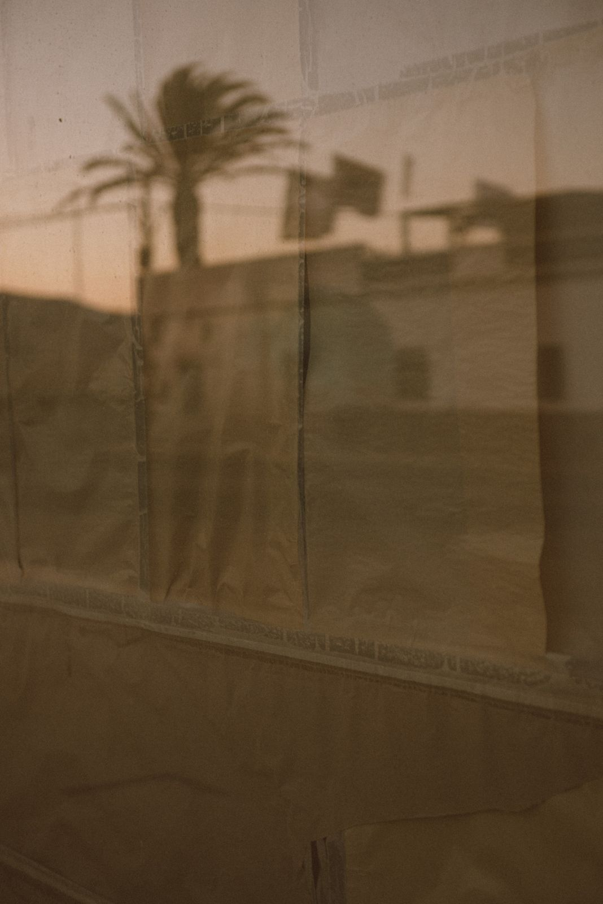
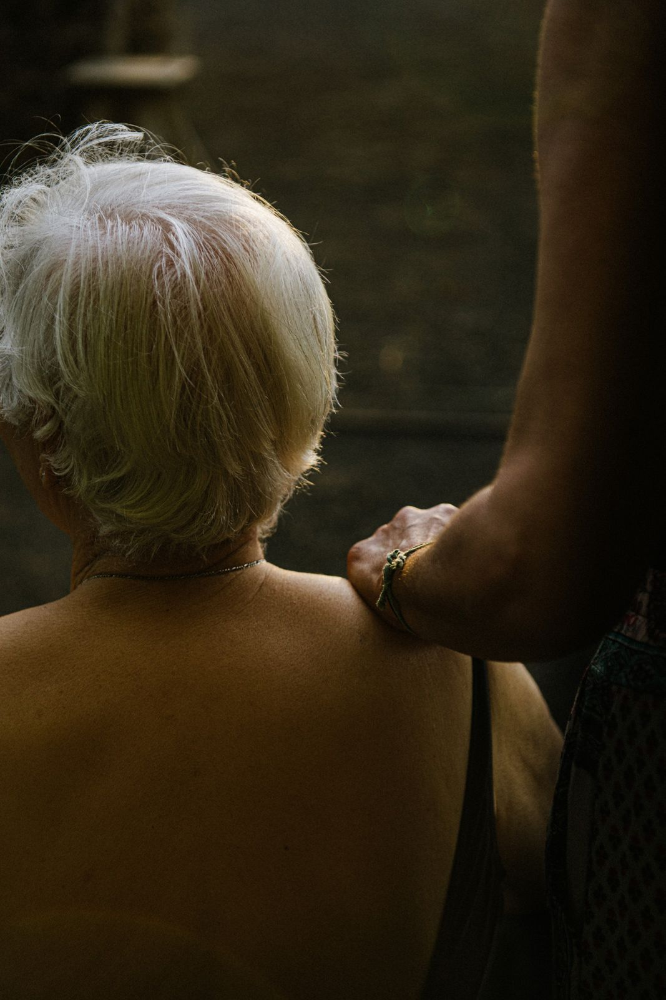
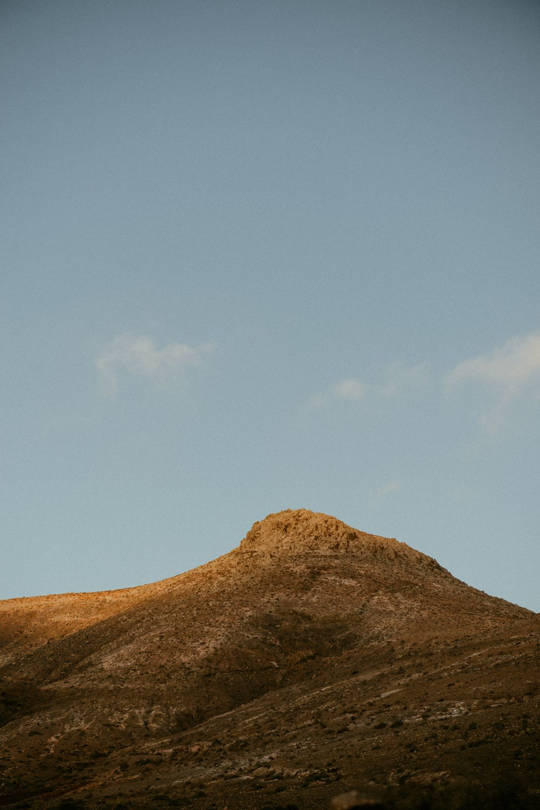
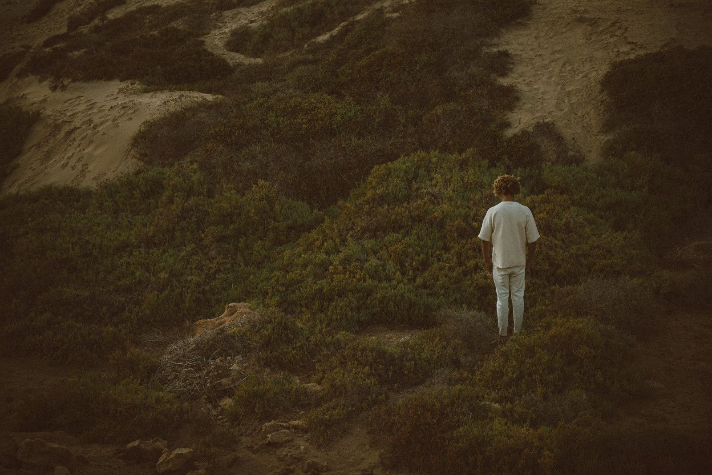
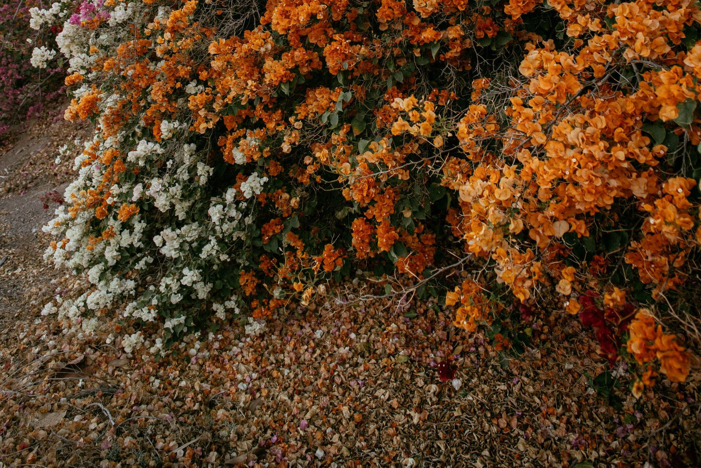
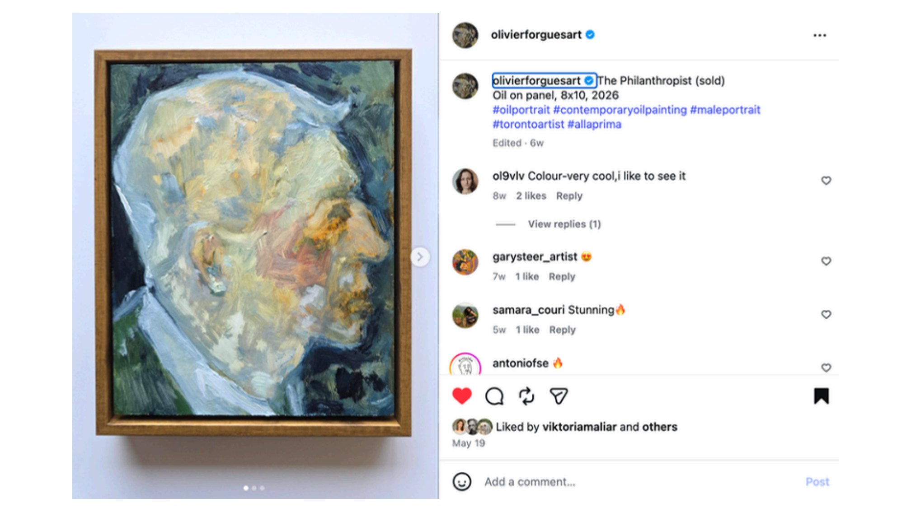

Andrea Robin StudioStudio day
What today is, the standing order for it, and the next dated thing. The reasoning behind every decision here is kept, but folded away, so it does not have to be reread each week.
Capacity holds two of making, video and selling admin. Not three. This year: making, and being seen. Foundations waits for 2028. The site takes five minutes on Sunday morning and is then closed.
For the days it gets heavy: four hours, a sitter, an easel and a timer, and a room of strangers painting the same face on television, succeeding in self-knowledge and courage as much as in likeness. What if this is just for fun?
Coming up
The four projects

01The engine. What is made on Sunday, how, and the decisions made once so none are made at the table.
Open
02Dear Ordinary week by week, and the landscape of fine art writing: forms, scholars, programs, in case the door opens.
Open 03The Monday protocol and the catalogue fields. Capture is separate from showing.
Open
04Foundations, one module a year. Recorded first, then crit sessions taught the way the shops were.
OpenThree frames that hold them

Every grant, prize, open and residency that fits, September 2026 to January 2028, with the readiness kit above it.
Open
Places that matter to this work: where to study or teach, where to show or be collected, and the collections that change how one paints.
Open
September 2026 to December 2027 in three lanes: make, share, relationships. November closes the book. December is kept clear.
OpenEight hours on Sunday, ten until six, for making. Two to four hours on Monday evening for documentation, correspondence and admin. That is about thirty-five hours a month of studio time and between nine and seventeen for everything else. Those two blocks are the whole budget, and several plans were cut because they did not fit them.
One project per area for at least a year. Depth requires boundaries. Anything not currently running is deferred rather than cancelled, and each deferred thing is added only when the one before it has become easy.
The binding constraint is paid hours rather than audience or talent. A grant returns hours to the practice; a sale consumes them. Ranked by hours returned: grants, institutional commissioning, teaching priced to institutions, then retail. The Calendar holds the funders and prizes that follow from that ranking.
Further study in fine art is a hope I hold open and prepare for. If I am able to study fine art more in my lifetime it will be a great privilege, and it is not an option at present. My near-term path runs through disability studies and counselling psychology, funded by my career. Teaching, writing and studying in fine art are live futures; the Writing page is built so that if the door opens, I am ready.

Twenty-nine pages. Paintings, drawings and process posts saved as they were found.
this chapter
Inspiration
The work being looked at while this chapter is being made. A looking file rather than an argument, kept in the order it was gathered.
Download the deck